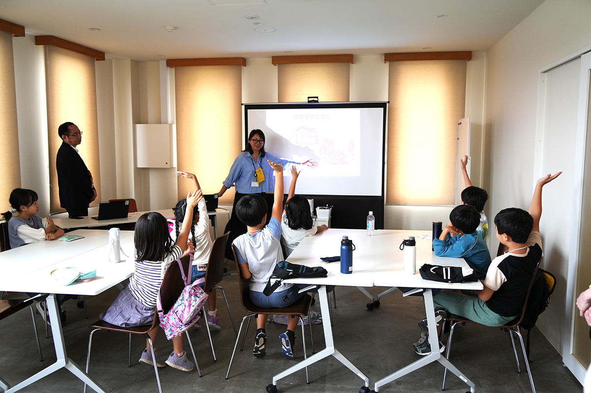
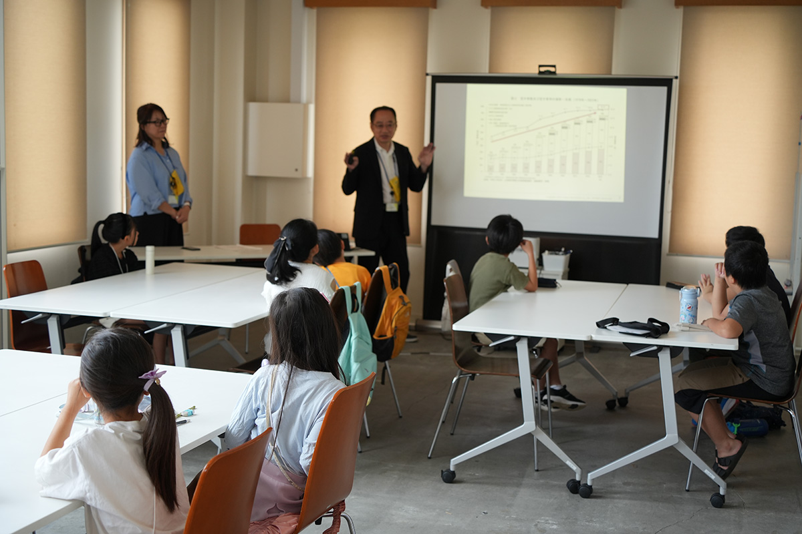

マチカドこども大学®「住まい学」開講 ＠CAFÉ & SPACE L.D.K.


小田急不動産では、多摩大学との産学連携の取組み『マチカドこども大学®』の講座として、2025年10月に「住まい学」講座を実施しました。
本講座では、「空き家ってなに？」「どうして空き家になるの？」「空き家をそのままにするとどうなるの？」といった問いを通じて、子どもたちが空き家や住まいの未来について考える機会をつくりました。
講座の前半では、空き家の意味や、少子高齢化、人口減少、住み継ぐ人がいないこと、解体費用の負担など、空き家が生まれる背景を分かりやすく紹介しました。また、草木の繁茂、ごみやにおい、虫の発生、不審者の侵入、火災など、空き家をそのままにした場合のリスクについても学びました。
後半では、「おじいちゃん・おばあちゃんの家が空き家になったらどうするか」をテーマに、家族の誰かが住む、貸す、売る、管理する、地域で利活用するなど、さまざまな選択肢について考えました。子どもたちは自分の考えを選び、グループで意見を出し合いながら、住まいの活かし方に正解が一つではないことを学びました。
マチカドこども大学®「住まい学」講座は、空き家や住宅ストックの課題を、次世代に分かりやすく伝える住教育の取組みです。子どもたちが家に帰って、住まいの将来について家族と話すきっかけとなることを目指しています。